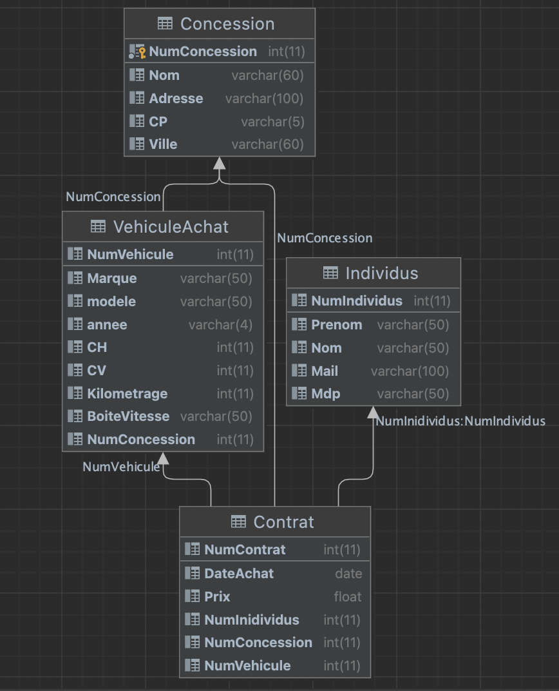

AP2 - Concessionaire
Sujet
Dans ce projet, j'ai réalisé un site avec structure MVC (Modèle-vue-contrôleur) en php permettant de gérer de nombreuses fonctionnalités. Ce site permet la gestion d'une concession avec ces véhicules en ventes (Ajout, modification, suppression et consultation), ainsi que la recherche d'un véhicule en fonction de certains critères (CH, année, cv,etc...).
languages utilisés : php, html, css et mysql
Modèle Conceptuel des Données

Modèle Logique des Données
